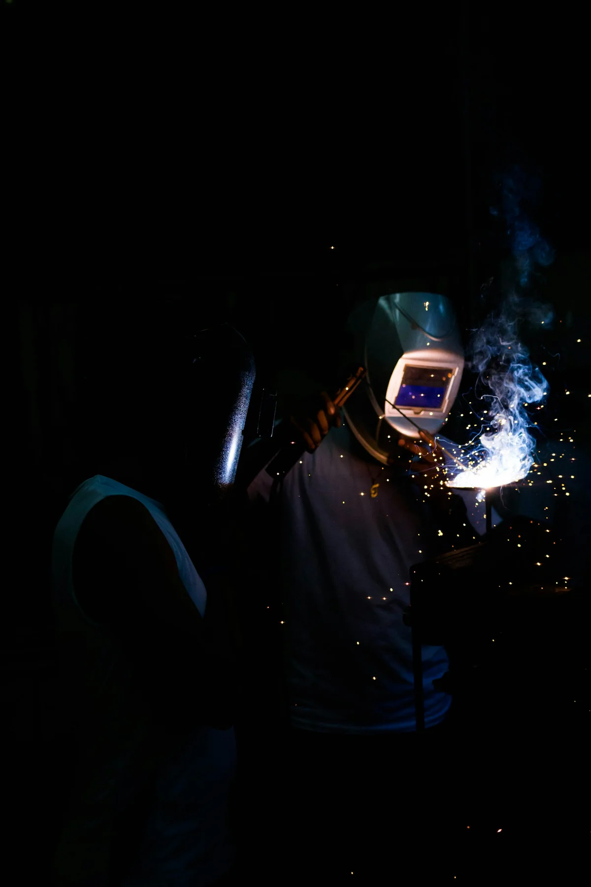

使用碳化铬堆焊修复和重建HPGR辊面。堆焊恢复磨损轮廓并提供HRC 60-68耐磨表面，成本仅为新辊的几分之一。
在铸钢基体上堆焊；可重复堆焊3-5次延长使用寿命；立磨辊套和HPGR侧板的经济型方案...
VRM辊和磨盘瓦修复。现场堆焊无需拆卸即可恢复磨损表面，最大限度减少水泥和发电厂的停机时间。
在铸钢基体上堆焊；可重复堆焊3-5次延长使用寿命；立磨辊套和HPGR侧板的经济型方案...
| 型号 | C | Cr | Nb | W | Fe |
|---|---|---|---|---|---|
| Hardfacing Overlay (Cr-C) | 3.0-5.5 | 20.0-35.0 | 4.0-8.0 | 0-10.0 | Balance |
在铸钢基体上堆焊；可重复堆焊3-5次延长使用寿命；立磨辊套和HPGR侧板的经济型方案